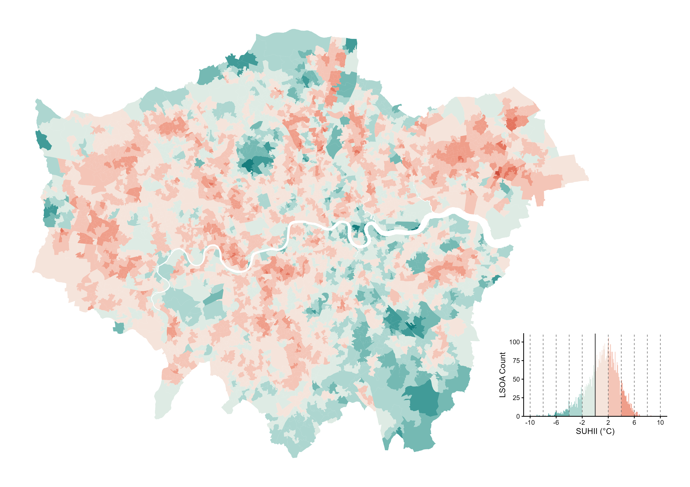
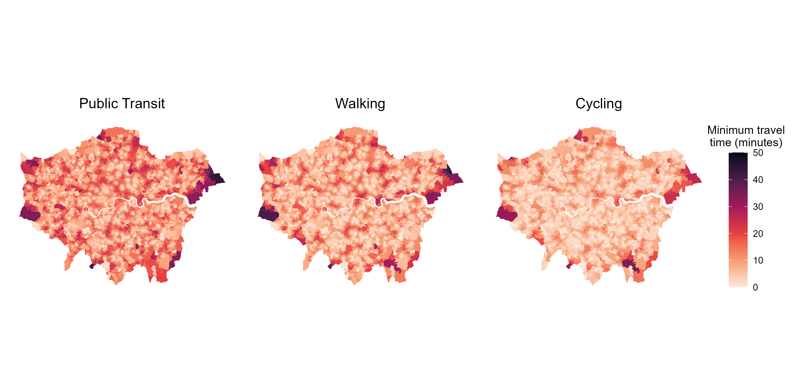
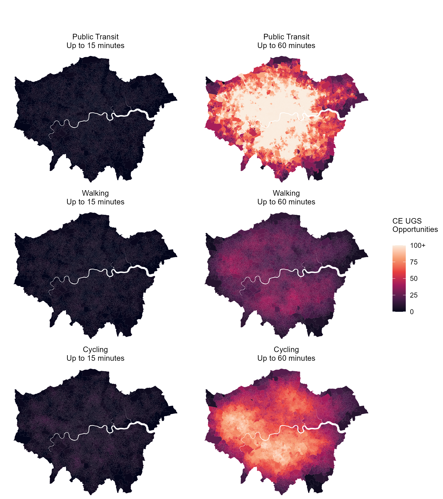

Chapter 4 Results
4.1 Heat Exposure and Cooling-Effective Urban Green Spaces
This section presents the results from the methodology as described in Section 3. According to Landsat-9 summer 2025 observations, mean surface temperature was 36.14°C across London. At LSOA-level, mean LST ranged from 26.16°C to 44.67 °C. Among LSOAs, 3,509 (70.26%) recorded above and 1,485 (29.74%) below the mean LST of London, indicating substantial variation in LST at neighbourhood levels. Relative to the mean LST of London, SUHII ranged from -9.98°C to 8.53°C, with a standard deviation of 2.44°C, showing a spatially heterogeneous distribution across London (Figure 9).

Figure 4.1: Spatial distribution of SUHII across 4,994 LSOAs in Greater London. SUHII shows the mean LST per LSOA relative to the mean LST of London, where positive values indicate conditions warmer than the mean LST of London and negative values indicate conditions cooler than the mean LST of London.
As shown in Figure 10, out of the 1,837 UGS ≥ 2ha, 989 (53.84%) demonstrated effective cooling, and of these, 602 (60.87%) were considered publicly accessible. The selected cooling-effective UGS had a mean temperature of 35.36°C, which was 0.78°C lower than the mean LST of London, highlighting their potential to provide effective localised cooling. The cubic polynomial curves reported a mean R-squared of 0.827, suggesting a relatively good fit of the relationship between LST and distance from each UGS. Cooling performance varies, with a mean PCI of 0.020, and a mean PCG of 0.75°C. These values were similar to the mean values of 0.029 (PCI) and 0.80°C (PCG) as reported by Peng et al. (2021). However, the presence of cooling-effective UGS itself does not establish whether these cooling opportunities are accessible from all neighbourhoods.
![Spatial distribution of Park Cooling Intensity (PCI) across Greater London, showing cooling-effective UGS with UGS without measurable cooling benefits featured in light grey (a), and publicly accessible cooling-effective UGS with excluded UGS featured in dark grey (b). (a) showed 989 UGS that demonstrates cooling effects, where considering publicly accessible cooling-effective UGS (Public Park or Garden, and Playing Field) only, this reduced to total of 602 cooling-effective UGS included in this study (b)](general_images/Fig10_Spatial_Distribution_PCI.png)
Figure 4.2: Spatial distribution of Park Cooling Intensity (PCI) across Greater London, showing cooling-effective UGS with UGS without measurable cooling benefits featured in light grey (a), and publicly accessible cooling-effective UGS with excluded UGS featured in dark grey (b). (a) showed 989 UGS that demonstrates cooling effects, where considering publicly accessible cooling-effective UGS (Public Park or Garden, and Playing Field) only, this reduced to total of 602 cooling-effective UGS included in this study (b)
4.2 Multimodal Accessibility to Cooling-Effective Urban Green Space
Cycling provided the shortest minimum travel time with a median of 6 minutes, followed by walking (8 minutes) and PT (12.02 minutes). Spatially, longer travel times concentrate in several peripheral areas of London across all modes, with cycling providing shorter access times in general (Figure 11). These findings partially contrast with Duan, Chen and Roosli (2026), finding stronger park accessibility in travel time by public transport modes than cycling across London.

Figure 4.3: Spatial distribution of minimum travel time (minutes) to the nearest cooling-effective UGS by PT, Walking and Cycling. Darker colours indicate a higher estimated travel time (minutes) to reach the neighbourhood’s nearest cooling-effective UGS and lighter colours for lower estimated travel time (minutes). Travel times are estimated by r5r routing as specified in Section 3.5.

Figure 4.4: Spatial distribution of cumulative opportunity accessibility to cooling-effective (CE) UGS by PT, Walking and Cycling, 15 and 60-minute thresholds. Values represent the number of cooling-effective (CE) UGS (as cooling opportunities) reachable from each LSOA, where darker colours indicate lower levels of accessibility to cooling-effective UGS, while lighter colours indicate higher levels of accessibility. Values exceeding 100 opportunities are identified as 100+ in general.
4.3 Spatial Association and Clustering
Given the indication of strong positive spatial autocorrelation in GLM model residuals, BYM2 models were fitted, and the corresponding regression results are detailed in Table C1. SUHII was positively associated with cooling-effective UGS accessibility across all models, with IRRs ranging from 1.010 to 1.084 (95%CI excluding 1). Posterior evidence indicates that a one-standard-deviation increase in SUHII was associated with higher access to cooling-effective UGS with other variables held constant. Notably, the associations were stronger under 15-minute (4.1-8.4%) compared to 60-minute models (1.0-1.8%). In contrast, IMD showed limited posterior support across most models featuring credible intervals that included 1, of which only Model 4 indicated evidence for a negative association with accessibility (IRR=0.9888, 95%CI=0.979-0.998). Further, the interaction between SUHII and IMD was negative across all models and found credible in all three 15-minute threshold models (Model 1, 3 and 5) and the 60-minute model by cycling (Model 6). Overall, this indicates that positive associations between accessibility and heat exposure tended to weaken upon the influence of higher neighbourhood deprivation.
Following the inclusion of spatial effects in BYM2 models, residual Moran’s I values were substantially reduced in comparison to GLM models, although some indication of spatial autocorrelation remains (see Table C2). Despite improvements in accounting for spatial dependence, the observed adjusted PIT distributions were generally bell-shaped (Figure C1), indicating some remaining predictive overdispersion and miscalibration across models.
BiLISA clustering analysis identified statistically significant (p-value < 0.05) local clusters of low accessibility surrounded by high heat exposure and/or deprivation (see Table D1). Zooming into L-H clusters, these accounted for 7.0-12.0% of LSOAs across 15- and 60-minute specifications. This is further examined through mapping approaches (Figure 13, Figure 14), which display overlapping heat exposure and/or deprivation L-H clusters spatially. Across all modes and travel time thresholds, L-H clusters were generally concentrated in north-east and eastern London, with several clusters along the western and northern periphery. Under the 15-minute threshold, clusters were more spatially dispersed across north-eastern, western and inner London. Conversely, these spatial clusters were more concentrated under the 60-minute threshold in north-east and eastern parts of the city. Observable differences between heat exposure and IMD patterns also indicate that neighbourhoods experiencing relatively greater heat exposure were not necessarily those experiencing greater deprivation.
![Spatial distribution of 15-minute BiLISA L-H Clustering of Low Accessibility and High SUHII and/or IMD by (a) PT, (b) Walking, (c) Cycling across LSOAs. Coloured LSOAs indicate neighbourhoods with relatively low accessibility surrounded by high values of SUHII and/or IMD. Dark red colour reflects L-H clusters in accessibility with both SUHII and IMD, red colours reflect L-H clusters of accessibility and SUHII, and orange colours reflect clusters of accessibility and IMD. Light grey colours refer to not L-H clustering significant LSOAs.](general_images/Fig13_BiLISA_15_min_LH_Combined.png)
Figure 4.5: Spatial distribution of 15-minute BiLISA L-H Clustering of Low Accessibility and High SUHII and/or IMD by (a) PT, (b) Walking, (c) Cycling across LSOAs. Coloured LSOAs indicate neighbourhoods with relatively low accessibility surrounded by high values of SUHII and/or IMD. Dark red colour reflects L-H clusters in accessibility with both SUHII and IMD, red colours reflect L-H clusters of accessibility and SUHII, and orange colours reflect clusters of accessibility and IMD. Light grey colours refer to not L-H clustering significant LSOAs.
![Spatial distribution of 60-minute BiLISA L-H Clustering of Low Accessibility and High SUHII and/or IMD by (a) PT, (b) Walking, (c) Cycling across LSOAs Coloured LSOAs indicate neighbourhoods with relatively low accessibility surrounded by high values of SUHII and/or IMD. Dark red colour reflects L-H clusters in accessibility with both SUHII and IMD, red colours reflect L-H clusters of accessibility and SUHII, and orange colours reflect clusters of accessibility and IMD. Light grey colours refer to not L-H clustering significant LSOAs.](general_images/Fig14_BiLISA_60_min_LH_Combined.png)
Figure 4.6: Spatial distribution of 60-minute BiLISA L-H Clustering of Low Accessibility and High SUHII and/or IMD by (a) PT, (b) Walking, (c) Cycling across LSOAs Coloured LSOAs indicate neighbourhoods with relatively low accessibility surrounded by high values of SUHII and/or IMD. Dark red colour reflects L-H clusters in accessibility with both SUHII and IMD, red colours reflect L-H clusters of accessibility and SUHII, and orange colours reflect clusters of accessibility and IMD. Light grey colours refer to not L-H clustering significant LSOAs.
Overall, considering cooling-effectiveness and public accessibility further narrowed cooling opportunities in London, while access to these cooling-effective UGS varied by travel mode and time threshold. Higher heat exposure was generally associated with greater accessibility, yet this relationship weakened with increasing deprivation. Nevertheless, local clusters persisted where low accessibility overlapped with high heat exposure and/or deprivation across London. All things considered, these results and their implications will be further discussed in Section 5.